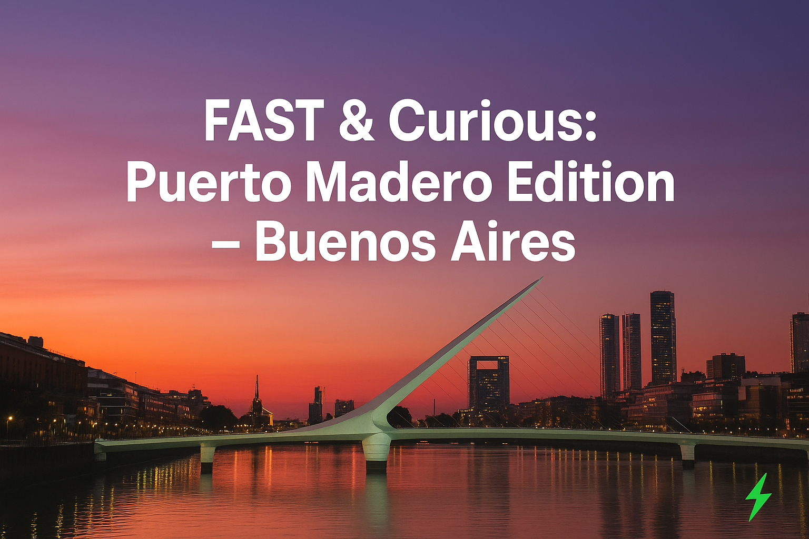
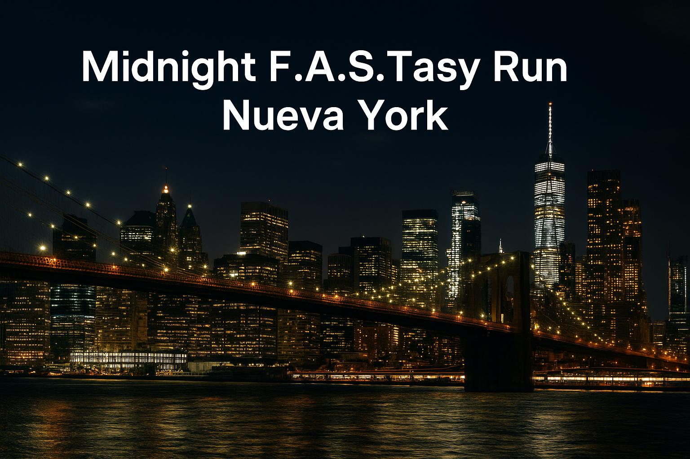
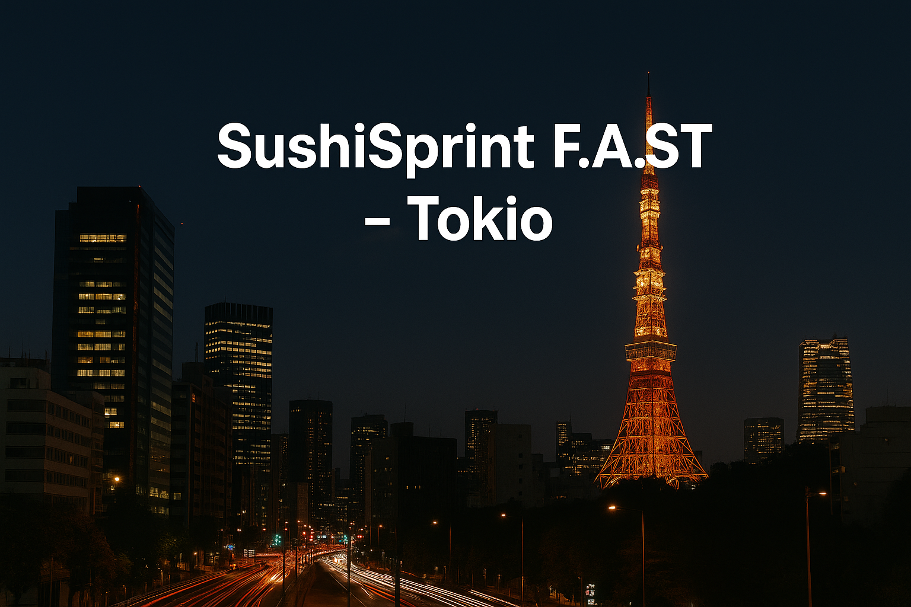

FAST & Curious: Puerto Madero Edition - Buenos Aires
El corazón de Puerto Madero se prepara para recibir la primera gran competencia del año. Con el Puente de la Mujer como punto de partida, los corredores atravesarán un circuito que combina la modernidad de los rascacielos con la esencia histórica de los antiguos docks. Cada paso que se dé en esta carrera tendrá un propósito mayor: financiar programas de atletismo en escuelas públicas de los barrios más vulnerables de Buenos Aires. Allí, cientos de chicos entrenan en patios de cemento o terrenos sin marcar, soñando con un espacio propio para correr. El FAST Challenge no solo promete velocidad y espectáculo, también la construcción de canchas y el acceso a entrenadores voluntarios para estos jóvenes. Como dato curioso, será la primera carrera urbana en Latinoamérica donde el cronometraje oficial incluirá la “F.A.S.T Mode”, una métrica especial que registra el impacto real de nuestras zapatillas en la aceleración de los atletas.
Midnight F.A.S.Tasy Run - Nueva York
La ciudad que nunca duerme será testigo de la competencia más vibrante de la temporada. La Carrera Nocturna atravesará Central Park bajo un espectáculo de luces LED y brazaletes neón que iluminarán cada zancada. A diferencia de las otras, esta competencia tendrá un fuerte enfoque cultural: la recaudación estará destinada a financiar programas comunitarios en barrios de Nueva York donde la obesidad infantil es un problema creciente. Gracias a este evento, se crearán canchas multiuso, programas de nutrición y clínicas deportivas gratuitas para jóvenes en situación de vulnerabilidad. Lo que la hace única es la experiencia: cada kilómetro del recorrido contará con estaciones musicales en vivo, desde DJs hasta bateristas callejeros, transformando la carrera en una auténtica fiesta urbana. Aquí no solo se correrá rápido: se celebrará el deporte como un motor de unión social.
SushiSprint F.A.S.T - Tokio
En Tokio, el contraste entre tradición y modernidad será el escenario perfecto para Run4Humanity. Los participantes atravesarán templos históricos, puentes iluminados y avenidas futuristas en una ruta diseñada para asombrar tanto a corredores como a espectadores. Pero lo más importante no estará en el asfalto, sino en lo que representa cada inscripción: apoyar programas deportivos en escuelas rurales de Japón y el sudeste asiático, donde la falta de recursos impide que miles de niños tengan su primera experiencia deportiva organizada. El evento destinará su recaudación a la entrega de kits deportivos, entrenadores voluntarios y la remodelación de gimnasios escolares en mal estado. Como curiosidad, en esta edición cada corredor recibirá un dorsal digital que, al escanearse con un celular, mostrará en tiempo real cuántos niños están siendo beneficiados con su participación.
Nuestra Meta
En F.A.S.T no buscamos récords personales, sino récords colectivos.
Cada evento es una oportunidad para cambiar vidas: recaudamos fondos, construimos canchas, equipamos clubes y promovemos un estilo de vida saludable en comunidades donde el deporte puede marcar la diferencia.
Nuestra meta no es solo correr más rápido, sino dejar una huella que perdure.